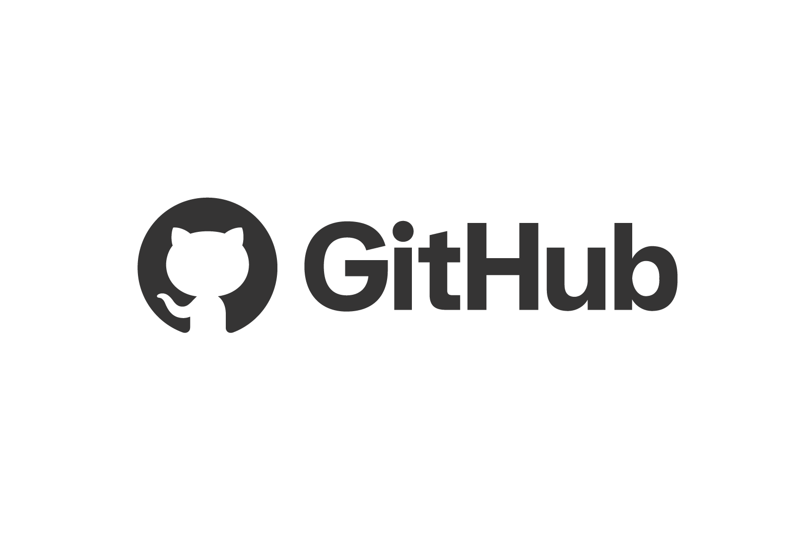

Intoducción al curso
Bienvenidos al Curso de programación web de cero a fullstack, un viaje intensivo de 180 días diseñado para llevarte desde los conceptos más básicos del desarrollo web la creación y despliege de aplicaciones completas en producción.
Este curso está estructurado como un roadmap progresivo: comenzaras dominando el front end con HTML,CSS y JavaScript, para luego adentrarte en tecnologías modernas como React. Después pasarás al back end con Node.js y Express, aprenderás a gestionar bases de datos con MongoDB y finalmente integraras todo para construir y desplegar aplicaciones MERN reales.
A lo largo del camino no solo aprenderás sintaxis y conceptos: también desarrollarás proyectos prácticos en cada etapa (portafolio, app del clima, blog, APIs REST, dashboard, e-commerce, etc.), resolveras problemas de lógica y dominaras herramientas profesionales como Git, GitHub, Postman y plataformas de despliegue como Vercel y Render.
Al finalizar los 180 días, contaras con un portafolio sólido, experiencia real construyendo aplicaciones full stack y la confianza necesaria para enfrentarte al mundo laboral como desarrollador web.
¿Listo para empezar? Consulta el roadmap completo de 180 días y comienza tu transformación de cero a full stack.
Temas del curso
Estos son los módulos que iremos recorriendo a lo largo de los 180 días. Haz clic en cada uno para acceder a su contenido completo.
